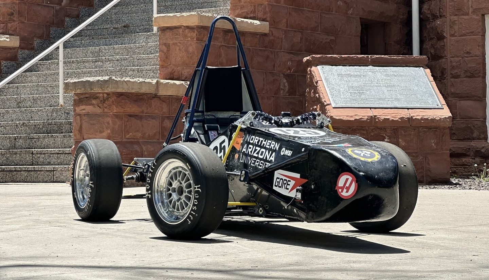

Steady-State Pin Fin Analysis
A generalized pin fin algorithm predicting thermal performance across varying cross-sectional geometries and boundary conditions.
The Problem
Heat dissipation is a fundamental challenge in thermal engineering, where the geometry of a cooling surface can mean the difference between efficiency and failure. This project was motivated by the need to accurately predict heat transfer behavior across pin fins under varying cross-sectional profiles and boundary conditions.

How I Built It
I developed a generalized pin fin analysis algorithm capable of modeling conductive-convective heat transfer across arbitrary cross-sectional geometries — focused around conical and cylindrical fins — while accommodating a range of end conditions such as insulated tips, convective ends, and prescribed base temperatures. By performing nodal analysis with varying nodal counts until accuracy conditions were met, I was able to identify and quantify heat transfer throughout the fin.

Results & Learnings
The algorithm produces heat transfer rate predictions and the fin's temperature distribution adaptable to any geometry-condition pairing, offering a flexible tool for thermal design optimization. Through this work, I deepened my understanding of nodal analysis and reinforced concepts from my studies. In the future, I will create a GUI for a better user experience.


Formula SAE Front Wing
An active aero system maximizing downforce on turns and minimizing drag on straights, pioneering NAU Formula SAE's aerodynamic package.
The Problem
The NAU Formula SAE team has no aerodynamic features, so implementing a front wing active aero system — along with additional aerodynamic features — can improve competition performance significantly by generating targeted downforce without an excessive drag penalty.

How I Built It
As data analysis lead, I identified a suitable airfoil profile and determined optimal angle of attack for turns and straights. After choosing an airfoil, I performed an analysis of downforce and drag across varying angles of attack between 0 and 20 degrees. From this I determined the optimal angles of attack, and the resulting forces were applied to additional engineering analyses.

Results & Learnings
The resulting wing produced an approximate downforce of 76 Newtons while turning and almost 0 Newtons of drag on straights. Implementing this system would provide a large performance increase for a team with no prior aerodynamic packages. This project allowed me to apply my knowledge of aerodynamics and fluid mechanics to a physical design intended for a real vehicle.